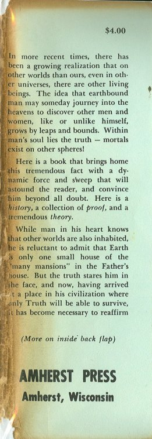

| Home > Other tongues - Other flesh |
|---|
|  |
In more recent times, there has been a growing realization that on other worlds than ours, even in other universes, there are other living beings. The idea that earthbound man may someday journey into the heavens to discover other men and women, like or unlike himself, "grows by leaps and bounds. Within man's soul lies the truth--mortals exist on other spheres!
Here is a book that brings home this tremendous fact with a dynamic force and sweep that will astound the reader, and convince him beyond all doubt. Here is a history, a collection of proof, and a tremendous theory.
While man in his heart knows that other worlds are also inhabited, he is reluctant to admit that Earth is only one small house of the "many mansions" in the Father's house. But the truth stares him in he face, and now, having arrived at a place in his civilization where only Truth will be able to survive, it has become necessary to reaffirm
(More on inside back flap)
| Home > Other tongues - Other flesh |
|---|